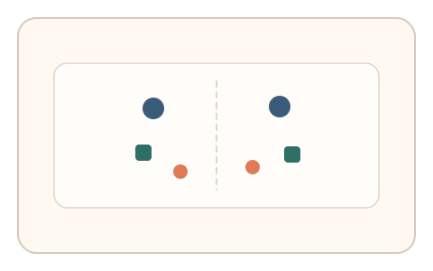
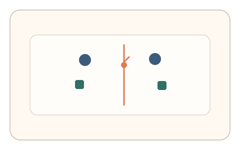
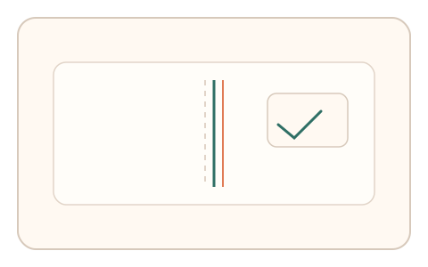

#29
视觉思考范式：空间/结构/直觉
已扩展
近似对称轴
让用户标出近似对称轴，以偏移模式与稳定性反映人类对近似对称的感知偏差。
概念原文
给出近似对称但存在微扰的图形，用户拖拽标出对称轴；系统评估轴线偏移模式与稳定性。
利用人类对“近似对称”的感知偏差作为验证信号。
研究背景
人类对对称结构高度敏感，但在存在微扰时会产生稳定的偏移与误差模式。通过测量用户对近似对称轴的定位误差，可获得比答案本身更稳健的行为特征。
核心机制
- 展示近似对称但带微扰的图形。
- 用户拖拽标出他们认为的对称轴。
- 记录轴线位置、角度与微调轨迹。
- 统计偏移方向与稳定性分布。
用户流程
- 步骤 1：用户看到近似对称图形。
- 步骤 2：用户拖拽并调整对称轴位置。
- 步骤 3：系统分析偏移模式并判定。
判定信号
轴线偏移方向与幅度分布
人类对近似对称的判断会出现稳定偏差。
微调次数与停顿节奏
真实判断通常伴随短暂微调与犹豫。
判定逻辑
综合轴线偏移幅度、方向一致性与微调节奏，要求符合人类统计区间；完全精确或缺乏调整判异常。
对抗面
- 脚本直接计算几何对称轴
- 重放真实用户的调整轨迹
防御与缓解
- 随机化微扰类型与幅度，避免固定几何解
- 引入轻微噪声与动态元素增强不确定性
- 叠加拖拽速度与停顿分布进行多信号判定
可达性与风险
提供高对比与放大模式，并允许键盘微调轴线，避免对精细操作用户造成负担。
- 文化或经验差异导致对称偏好差异
- 触控设备精度影响微调特征
可视化状态

状态 1：近似对称图形
轻微扰动打破完美对称。

状态 2：轴线拖拽
用户拖拽并微调对称轴。

状态 3：偏移判定
分析偏移方向与稳定性。
参考资料
Gestalt psychology
说明对称性作为分组与整体知觉线索。
Symmetry
说明对称结构的基础概念。